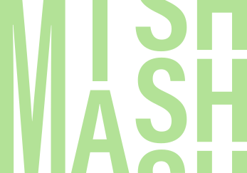
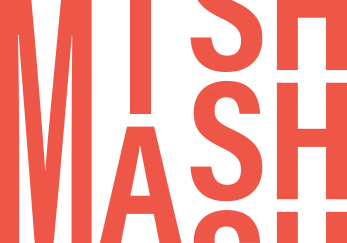
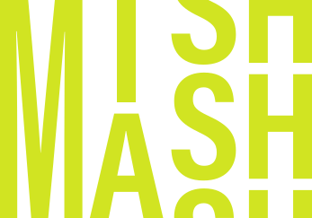

Centre for AI
and Creativity
One of Norway's national AI research centres · mishmash.no
Why?
Because there is no agreement about what AI is doing to us — and that disagreement is the thing worth studying.
Why? · 2026
A mishmash of opinions


There is a confusing mixture — a mishmash — of notions about AI's potential and its risks.
Why?
Both are true at once
Threat
- Models trained on artists' work without agreement
- Falling income across the creative sector
- A narrower, more uniform culture
- Energy, water and hardware
Promise
- New instruments, new forms, new works
- Archives that can finally be searched
- Tools in the hands of people without a studio
- Methods that travel out of the arts
Most public arguments pick a side. A research centre has to hold both.
Why? · the name
mish·mash
noun — a confused mixture.
Not an acronym. It began as a working title, describing how the founders saw the group of people and institutions that had assembled.
Among more than 150 centre proposals pitched to the Research Council of Norway in 2024, it was one of the few names people remembered. So it stuck.

Why? · definitions
Is a machine creative?
Creativity — the ability to form novel and meaningful ideas or works. (Boden 2004)
Creative AI — machine systems that can produce novel and meaningful results that stand independently. (de Vries 2020)
Creativity is a fundamental human trait. It has shaped technology, and been shaped by it, for as long as there has been technology.
Why? · where we stand

All technology, AI included, is made by people and for people. The interesting things happen where the circles overlap.
Why? · our entry point
Why start with the arts
Artists have been putting these systems under pressure since the 1950s. They find the edges first.
They push harder
Artistic use breaks a system in ways benchmark tests never reach.
They ask first
Authorship, consent and ownership arrived in the arts before they arrived anywhere else.
They show the public
A performance or an exhibition puts the question in front of people who will never read a paper.
Artistic exploration is our entry point for critical discussion about AI and its implications for human–machine interaction and society.
What?
One sentence, three approaches, seven work packages.

What? · the primary objective
MishMash will
create,
explore and
reflect on
AI for, through and in
creative practices.
What? · three approaches
Create · explore · reflect
CREATE
Making AI-based systems, tools and artworks — and the frameworks and policies around them.
EXPLORE
Using AI in creative practice, and taking creative methods into other fields.
REFLECT
Critically studying what AI does to people, culture and society.
Every work package does all three. It is also not a bad description of what happens in any lab.
What? · seven themes
Seven work packages
What? · the structure

The front face: seven themes, one work package each. This is where the disciplines and the partner institutions live.
What? · the structure

The top face: the three approaches. Every work package does all three.
What? · the structure

Themes × approaches × perspectives. A structured mesh, built out of the mishmash.
What? · three perspectives
Machines · humans · society

Machines
What can these systems actually do, and why? Data, models, limits.
Humans
How do we create with them? Agency, skill, bodies, craft.
Society
What changes when they enter the world? Authorship, law, economy, education.
What? · in practice
What it looks like


What? · an example
Strings On-Line — self-playing guitars that sense the room. NIME 2020.
Who?
More than 200 researchers and practitioners, from art schools to engineering departments.

Who? · the consortium
MishMash in numbers
Counted from mishmash.no. Institutes: SINTEF, Simula, IFE, NILU, NORSUS. Partners range from the National Museum to festivals, music organisations and companies.
Who? · mishmash.no/people/network
Who? · three kinds of people
Who creates, who explores, who reflects
Create
Engineers and artists. They build the systems and make the work.
Explore
Educators, clinicians, curators — the people who put the work in front of others.
Reflect
Scholars from sociology, philosophy and law. They ask what it means, and what changes.
Usually these three groups work at their own level, alone. Co-location is what changes that.
Who? · how disciplines meet

Intra, cross, multi, inter, trans. A centre needs all of them at different moments. Jensenius, Sound Actions (MIT Press, 2022)
Who? · an example
Ten definitions of noise
At a MishMash workshop, ten people from different backgrounds each gave a ten-minute talk on one word: noise.
Randomness
the mathematician
A fluctuation
the physicist
The unwanted part
signal processing
Material
the sound artist
Disturbance
the philosopher
The signal
whoever is recording ventilation this summer
Ten definitions, no agreement, and a very good discussion. That is what multidisciplinary looks like in practice.
Who? · across sectors
Not only universities
Universities and arts academies
Nearly every one in Norway.
Research institutes
SINTEF, Simula, IFE, NILU, NORSUS.
Public sector
The National Library, museums, the broadcaster.
Creative industries
Festivals, labels, film, games, rights organisations.
Freelancers and artists
In this sector a "user partner" can be one person with a practice.
Who? · governance
How it is run
Management
Day-to-day coordination of the centre's activities.
Work package leader group
Leads and two "sidekicks" for each of the seven WPs.
Board
Governance and strategic decisions.
Council
Strategic oversight and partner compliance.
Scientific advisory board
International scientific guidance and evaluation.
Stakeholder board
Representatives from partner organisations.
mishmash.no/about/organisation/
Where?
Everywhere in Norway — and mostly online.
Where? · a national centre
All over the country
Partners from Tromsø to Kristiansand: nearly every Norwegian university and arts academy, the research institutes, the National Library, museums, festivals and companies.
No single campus. The centre is a hub that strengthens the institutions themselves.
Where? · the partners
Wherever you are, a partner is close
Nearly every Norwegian university and arts academy is in MishMash, alongside the research institutes, the National Library, museums, festivals and companies.
- Each work package is led by one institution with two sidekicks from two others — collaboration is built into the structure, not hoped for.
- Membership is open to researchers at any partner institution, and to the unaffiliated.
- Seed funding goes to projects that cross partners.

The institution network, generated from mishmash.no
Where? · the rhythm
Mostly virtual, regularly physical
Every week
MeshUp — online, Thursdays 12:00–12:30. A short talk and a discussion. Open to everyone.
Every other week
Work package check-ins.
Every month
Thematic seminars and public workshops.
Twice a year
Conferences and symposia, touring Norway — talks, performances and exhibitions in one programme.
A distributed centre only works if the rhythm is reliable.
Where? · beyond Norway
Seven international partners
Norwegian in its funding and its obligations, international in its collaborations.
International partners can join seed-funded projects, provided there is a solid Norwegian collaboration involved. The centre primarily supports research activity in Norway.
mishmash.no/institutions/
When?
Started December 2025. Up to full speed now.

When? · the shape of it
A five-year centre
Which means: most of what MishMash will produce has not been produced yet. Now is the useful time to get involved.
When? · already happened
The first year


Weekly MeshUps since the start, workshops across the country, and the first seed-funded projects running.
When? · next
What is coming
35 new fellows
PhDs and postdocs starting across the consortium, in every work package.
Seed funding
Announced internally on a regular basis, for smaller cross-partner initiatives.
Two conferences a year
Touring Norway, with performances and exhibitions alongside the talks.
mishmash.no/events/ · mishmash.no/projects/
Join?
Membership is free, and the weekly meeting is open to anyone.
Join · four doors
How to take part
Come to a MeshUp
Online, Thursdays 12:00–12:30. A talk and a discussion. Open to everyone, no registration.
Become a member
Sign up for one or more work packages. Free. Open to researchers at partner institutions and to the unaffiliated. Write to contact@mishmash.no.
Come to a conference
Two a year, touring Norway. Talks, performances and exhibitions in one programme.
Apply as a master fellow
Master's students at affiliated institutions can apply to become a MishMash Master Fellow.
Join · an experiment you can inspect
The website is part of the research
- Person profiles generated from the national research archive (NVA), or ORCID for those outside Norway.
- Three reading levels on key pages — short, standard, advanced. Ted Nelson's stretchtext, finally buildable.
- Automatic Norwegian translation, which every communications office would be sceptical about. That is why we do it.
- At the bottom of every page: who edited it, the licence, the privacy level, the accessibility level.
- The whole site is public on GitHub.
Every file
Every file should carry an explicit licence and an explicit privacy level — not the project, not the folder, the file. Do that and training data, sharing and reproducibility all become tractable, because you can follow what happened to what.
mishmash.no/about/ai-colophon/
Centre for AI and Creativity
mishmash.no

contact@mishmash.no · MeshUp Thursdays 12:00